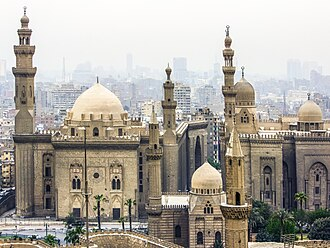

Overview
La mosquée du sultan Hassan est un complexe religieux islamique de la ville du Caire, la capitale de la république d'Égypte. Caractéristique de l'architecture mamelouke, elle fut édifiée à partir de 1356 sur l'ordre du sultan An-Nâsir al-Hasan. Ce vaste complexe abritait à l'origine plusieurs importantes madrasas où étaient étudiés les quatre madhhab ou écoles juridiques de l'islam sunnite : l'école hanafite, l'école hanbalite, l'école chaféite et l'école malékite. Le sanctuaire jouxte la mosquée Al-Rifa'i, dont il n'est séparé que par une rue étroite.
مسجد ومدرسة السلطان الناصر حسن أو مدرسة السلطان حسن أو مسجد السلطان حسن هو أحد المساجد الأثريّة الشهيرة بالقاهرة. يوصف بأنه درة العمارة الإسلامية بالشرق، ويعد أكثر آثار القاهرة الإسلامية تناسقاً وانسجاماً، ويمثل مرحلة نضوج العمارة المملوكية. أنشأه السلطان الناصر حسن بن الناصر محمد بن قلاوون خلال الفترة من 757هـ/1356م إلى 764هـ/1363م خلال حقبة حكم المماليك البحرية لمصر. يتكون البناء من مسجد ومدرسة للمذاهب الأربعة ، وكان يْدَرَّس بها أيضاً علوم تفسير القرآن، الحديث النبوي، القراءات السبع، بالإضافة إلى مُكتِّبين لتحفيظ الأيتام القرآن وتعليمهم الخط.
The Mosque-Madrasa of Sultan Hasan is a monumental mosque and madrasa located in Salah al-Din Square in the historic district of Cairo, Egypt. It was built between 1356 and 1363 CE during the Bahri Mamluk period, commissioned by Sultan an-Nasir Hasan. The mosque was considered remarkable for its massive size and innovative architectural components, and is still considered one of the most impressive historic monuments in Cairo today.
Sultan Hasan Camii ve Medresesi, Kahire'de bir cami, medrese ve türbeden oluşan bir külliyedir. Yapıda dört eyvanlı plan uygulanmıştır. Ana eyvanın mescit olarak kullanıldığı yapıya Sultan Hasan'ın Türbesi birleştirilmiş, önünden geçen yola uyum sağlaması için portalin bulunduğu cephe eğimli yapılmıştır. Planı ve portali Selçuklu etkisindedir. Portalin yanında bulunan çifte minareler Erzurum ve Sivas'ta yer alan çifte minareli Anadolu Selçuklu medreselerine benzerliği ile dikkat çeker.
Masjid-Madrasah Sultan Hasan adalah masjid dan madrasah monumental yang terletak di Lapangan Salahuddin di kawasan bersejarah Kairo, Mesir. Bangunan ini dibangun antara tahun 1356 dan 1363 pada masa Mamluk Bahri atas perintah Sultan an-Nasir Hasan. Masjid ini dianggap luar biasa karena ukurannya yang sangat besar serta unsur arsitekturnya yang inovatif, dan hingga kini masih dianggap sebagai salah satu monumen bersejarah paling mengesankan di Kairo.
Die Moschee des Sultans Hasan in Kairo war zu ihrer Zeit die größte Moschee der Welt. Sie wurde in den Jahren 1356 bis 1363 errichtet. Ihr Erbauer war an-Nasir al-Hasan, der zweimal als Sultan in Ägypten regierte. Der Herrscher war bekannt wegen seiner Gelehrsamkeit, die er sich aneignete, als er die Zeit zwischen seinen beiden Regierungsperioden im Gefängnis verbrachte. Der Moschee waren vier Medresen beigeordnet, die sein Interesse an der Gelehrsamkeit widerspiegelten. Der Bau weist eine Reihe architektonischer Besonderheiten auf. Sein etwas unregelmäßiger Plan misst 65 × 150 Meter. Der derzeitige Chatib ist Ali Dschoma. Unmittelbar daneben befindet sich die ar-Rifa'i-Moschee.
La mezquita-madrasa del Sultán Hasán es una imponente mezquita y madrasa de la época del sultanato mameluco de Egipto ubicada en el centro histórico de El Cairo, cerca de la Ciudadela. Su construcción comenzó en el año 1336, y los trabajos concluyeron al cabo de tres años «sin que hubiera habido un solo día en que no se trabajara», aunque se finalizaron definitivamente en 1363. En el momento en que se construyó la mezquita, destacaba por su tamaño y por algunas características arquitectónicas innovadoras. Su construcción fue ordenada por An-Nasir Hasan, un sultán con un perfil poco llamativo. El historiador al-Maqrizi (1364-1442) destacó que la mezquita tenía varias «maravillas constructivas», como la forma en que incluía mediante cuatro iwanes las cuatro escuelas de pensamiento sunita: Shafi'i, Maliki, Hanafi y Hanbali.
Мечеть султана Хасана — считают стилистически самым компактным и обобщающим из всех памятников Каира. Это один из шедевров архитектуры мамлюков. Здание было построено мамлюкским султаном ан-Насиром Хасаном в 1356 году для того, чтобы быть мечетью и религиозной школой для всех четырех суннитских правовых школ.
On the map
Documents and links
- Wikipédia — Français
- Wikipédia — العربية
- Wikipédia — English
- Wikipédia — Türkçe
- Wikipédia — Bahasa Indonesia
- Wikipédia — اردو
- Wikipédia — Deutsch
- Wikipédia — Español
- Wikipédia — Русский
- Wikidata — Q1430119
Data: Wikidata (CC0), updated every 3 months. The year is the earliest known construction date of the building: for a building that became a mosque later (such as Hagia Sophia), it is that of the original building. Photos: Wikimedia Commons, author and licence on each photo's page.